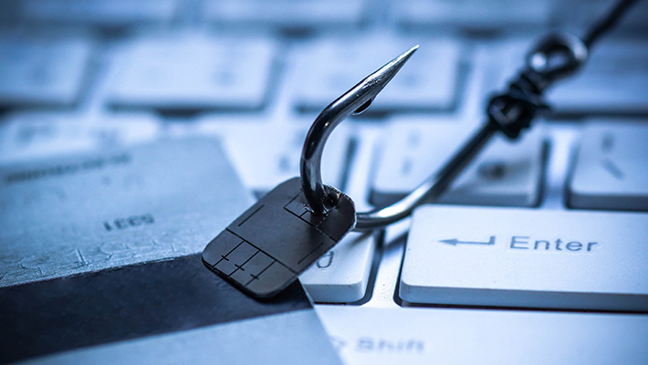

Historia de la Ciberseguridad
La evolución de la ciberseguridad brinda un contexto más amplio de cómo fue la transformación al mundo digital y los riesgos que surgieron con este cambio.
El primer hacker de la historia fue Nevil Maskelyne. En 1903, interceptó la primera transmisión de telégrafo inalámbrico, mostrando las vulnerabilidades de este sistema desarrollado por Marconi.
John Draper fue el primer ciberdelincuente, mejor conocido como “Captain Crunch”. Draper, descubrió que el sonido emitido por un silbato que se obsequiaba en las cajas de cereal de “Cap’n Crunch”, podía engañar a la señal de la central telefónica y así poder realizar llamadas gratis.
En los años 70s apareció el primer malware de la historia: Creeper, un programa que se replicaba así mismo. Este malware mostraba el mensaje “I’m a creeper, catch me if you can!”. A partir de ahí, nace el primer antivirus llamado Reaper, que su función era la de eliminar las infecciones por Creeper.

El malware en los años 80s incrementó su presencia y a la par se desarrollaron antivirus más eficientes. En la actualidad, se utiliza una plataforma de detección y respuesta de endpoint (EDR) para proteger los equipos de un ataque de malware debido a su gran evolución.
A finales de esta década, Kevin Mitnick utilizó ingeniería social para tener acceso a información personal y confidencial; este tipo de ciberataque, que comenzó a tener mayor uso en aquella época, sigue siendo una de los métodos más populares para vulnerar los activos de una empresa, sin embargo, se pueden prevenir y reducir con una buena estrategia, formación a colaboradores y protocolos de security awareness.
La regulación del Internet es un reto enorme debido a su carácter internacional y a la variedad en su contenido. A principios de los 90s la necesidad de hacer frente a los ataques cibernéticos se convirtió en tema de discusión internacional, la falta de conocimiento sobre el ciberespacio, de medidas de seguridad, jurisdicción y competencia afectaba sobre todo a los países desarrollados, donde el uso de la tecnología y el abuso de usuarios mermaba en la economía y sociedad.
Las primeras acciones para crear mecanismos legales frente a los ciberdelitos fueron locales. En 1986, en Estados Unidos se creó la Computer Fraud and Abuse Act, sin embargo, su capacidad se vio sobrepasada por la transformación tecnológica.
En 1995, se formó en Europa un comité de expertos en delitos informáticos para trabajar en estrategias y contrarrestar los ataques a través de Internet. Convencidos de la necesidad de aplicar una política penal para proteger a la sociedad frente a la ciberdelincuencia y la importancia de fortalecer la cooperación internacional, para 2001 se aprobó y firmó el Convenio de Budapest, que hoy en día es integrado por 56 países.

Con el paso del tiempo, se fueron inventando nuevos tipos de ciberataques, estos, se clasifican en 5 tipos los cuales podremos consultar abajo.
La galería de fotos incluye una foto representativa de cada tipo de virus:


Ransomware
El malware de rescate, o ransomware, es un tipo de malware que impide a los usuarios acceder a su sistema o a sus archivos personales y que exige el pago de un rescate para poder acceder de nuevo a ellos. Las primeras variantes de ransomware se crearon al final de la década de los 80, y el pago debía efectuarse por correo postal. Hoy en día los creadores de ransomware piden que el pago se efectúe mediante criptomonedas o tarjetas de crédito.
El ransomware puede infectar su ordenador de varias formas. Uno de los métodos más habituales actualmente es a través de spam malicioso, o malspam, que son mensajes no solicitados que se utilizan para enviar malware por correo electrónico. El mensaje de correo electrónico puede incluir archivos adjuntos trampa, como PDF o documentos de Word. También puede contener enlaces a sitios web maliciosos.
Otro método de infección habitual, que alcanzó su pico en 2016, es la publicidad maliciosa. La publicidad maliciosa consiste en el uso de publicidad en línea para distribuir malware con poca interacción por parte del usuario o incluso ninguna. Mientras navegan por la web, incluso por sitios legítimos, los usuarios pueden ser conducidos a servidores delictivos sin necesidad de hacer clic en un anuncio. Estos servidores clasifican los detalles de los ordenadores de las víctimas y sus ubicaciones y, a continuación, seleccionan el malware más adecuado para enviarlo.
Phishing
El phishing se refiere al envío de correos electrónicos que tienen la apariencia de proceder de fuentes de confianza (como bancos, compañías de energía etc.) pero que en realidad pretenden manipular al receptor para robar información confidencial. Por eso siempre es recomendable acceder a las páginas web escribiendo la dirección directamente en el navegador.
La mayoría de los ataques de phishing comienzan con la recepción de un correo electrónico o un mensaje directo en el que el remitente se hace pasar por un banco, una empresa u otra organización real con el fin de engañar al destinatario. Este correo electrónico incluye enlaces a un sitio web preparado por los criminales -que imita al de la empresa legítima- y en el que se invita a la víctima a introducir sus datos personales.
Además los criminales se valen de ciertos trucos de ingeniería social para crear alarma en los receptores de los mensajes, con indicaciones de urgencia, alarma y diferentes llamadas a la acción. La idea es que el usuario actúe de inmediato ante el estímulo y no se detenga a analizar los riesgos de su acción.
Adware
El adware es un software no deseado diseñado para mostrar anuncios en su pantalla, normalmente en un explorador. Algunos profesionales de la seguridad lo ven como un precursor de los PUP (programas potencialmente no deseados) de hoy en día. Normalmente, recurre a un método subrepticio: bien se hace pasar por legítimo, o bien mediante piggyback en otro programa para engañarlo e instalarse en su PC, tableta o dispositivo móvil.
El adware genera beneficios a su programador desplegando automáticamente anuncios en la interfaz de usuario del software o en la pantalla emergente que salta durante el proceso de instalación. Y ahí es cuando le empiezan a salir dudosos programas para perder peso milagrosamente, ofertas con secretos para hacerse rico en el acto y falsas advertencias sobre virus que invitan a hacer clic sobre ellas.
Hay dos formas principales por las que el adware se cuela en su sistema. En la primera, usted descarga un programa (normalmente freeware o shareware) que instala el adware sin que se dé cuenta y sin su permiso.La segunda forma es igual de traicionera: usted está navegando por un sitio web. Puede ser de confianza, o tal vez lo ha abierto de pasada. En cualquier caso, se puede infectar con adware, que se aprovecha de una vulnerabilidad en el explorador del usuario para iniciaruna descarga involuntaria.
Spyware
Es un término genérico para denominar al software malicioso que infecta su ordenador o dispositivo móvil y recopila información sobre usted, su navegación y su uso habitual de Internet, así como otros datos.
El resultado no es de extrañar, pues el spyware actúa con sigilo abriéndose camino en su ordenador sin que usted sea consciente ni lo permita: se adhiere a su sistema operativo de tal forma que su presencia en el ordenador infectado queda asegurada. Es posible que, sin darse cuenta, haya permitido que el spyware se instale automáticamente al aceptar los términos y condiciones de un programa de apariencia inofensiva que descargó sin leer la letra pequeña.
Con independencia de cómo invada su equipo, el spyware se ejecuta silenciosamente en segundo plano y recopila información o supervisa su actividad para llevar a cabo acciones maliciosas que afectan al ordenador y a su uso. Esto incluye registrar capturas de pantalla, pulsaciones de teclas, credenciales de autenticación, direcciones personales de correo electrónico, datos de formularios en línea, información de uso de Internet y otros datos personales, como números de tarjetas de crédito.
Troyano
Se trata de un tipo de malware también conocido como caballo de Troya por el relato histórico. Cuando el vientre del caballo se abrió por la noche, ya era demasiado tarde. Los griegos habían logrado capturar la ciudad de Troya después de un extenso asedio y, con ello, poner fin a la Guerra de Troya. Miles de años más tarde, el mito del caballo de Troya sigue vivo, aunque con una connotación menos halagadora. Lo que antes fue reconocido como un truco brillante y una asombrosa hazaña de ingeniería ahora se considera como una peste digital maliciosa cuyo único propósito es causar estragos en los ordenadores de sus víctimas sin que lo sepan. ¿Qué hace un troyano para conseguirlo? Para ello, lee contraseñas, registra pulsaciones en el teclado o abre puertas de acceso para la entrada de más malware que podría incluso tomar como rehén al ordenador.
Actualmente, los troyanos informáticos no solo atacan a equipos de Windows, sino también de Mac y dispositivos móviles. Por lo tanto, nunca debes sentirte demasiado seguro ni estar en Internet sin contar con protección antivirus actualizada.
El malware a menudo entra en los ordenadores mediante archivos adjuntos infectados, mensajes de texto manipulados o sitios web falsos. Sin embargo, también existen troyanos de servicios secretos que se pueden instalar en sistemas objetivo sin que el usuario se entere y sin necesidad de interacción por parte de los objetivos.
Hay varios tipos de troyanos (cada uno enlazado a su explicación):